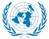
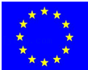

2016年北京市西城区中考历史试题 · 选择题 第11、12、13、14、15题
11．（2分）联合国是当今世界最重要的国际组织。与其成立相关的会议是（ ）
A．华盛顿会议B．雅尔塔会议C．开罗会议D．日内瓦会议
12．（2分）20世纪90年代以来，美国新经济的主要特征是（ ）
A．工业化 信息化B．工业化 市场化
C．市场化 全球化D．信息化 全球化
13．（2分）法国大文豪雨果曾预言“欧洲将融为一个整体”。1993年，这个预言通过欧盟的建立初步实现了。欧盟的旗帜是（ ）
A．

B．
C．D．
14．（2分）二战后，西欧和日本经济迅速发展的共同外部因素是（ ）
A．采用先进的科学技术
B．制定正确的发展政策
C．美国的援助和扶持
D．加强联合，建立华沙条约组织
15．（2分）1991年12月25日晚，飘扬在克里姆林宫上空的苏联国旗徐徐降下，代之而起的是白、蓝、红三色的俄罗斯国旗。这一事件标志着（ ）
A．沙俄覆灭B．苏俄诞生C．东欧剧变D．苏联解体